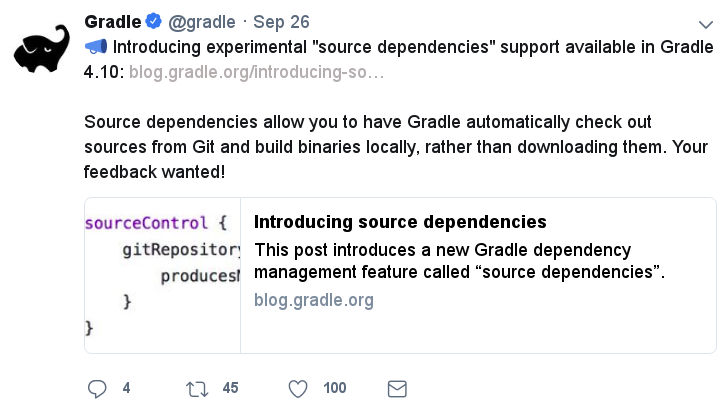
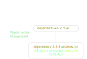
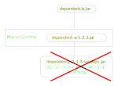

# A binary dependency pulled from rubygems.org
gem 'rack', '2.0.1'
# A source dependency built by Blunder
# from a git commit
gem 'rack',
:git => 'https://github.com/rack/rack.git',
:ref => '0bd839d'

srcdeps
Peter Palaga
Senior software engineer at Red Hat Middleware
WildFly Camel/Red Hat Fuse, WildFly/JBoss EAP and others
Author of
srcdepsViews in this presentation are my own
Agenda
Source dependencies:
What is it
What is it good for
Implementations:
srcdepsfor MavenGradle 4.10+ source dependencies
Demo
Limitations, related technologies
What are source dependencies?
The "usual" dependencies
Software projects often depend on artifacts produced by other projects
Those artifacts
typically contain compiled code
usually available in repositories (Maven Central, jcenter, …) on the internet
Build tools (Maven, Gradle, …) responsible for finding and downloading the dependencies
Source dependencies
Build of a git commit deterministic enough
⇒ Source code of a dependency enough to use it in a dependent project
The build tool has to:
Check out the sources (e.g. from a git repo)
Build the artifacts required by the dependent project
NB: Dependency artifacts do not need to be available in an artifact repository
The idea is not new
Some languages (or their build tools) have it for some time already
Ruby
Gemfile of a Ruby project
Scala
build.sbt
// A binary dependency
libraryDependencies +=
"com.typesafe.play" %% "play-slick" % "2.0.2"
// A source dependency
myProject
.dependsOn(
ProjectRef(
uri("git://github.com/freekh/play-slick.git#v1.2.3")
"play-slick"
)
)What is this good for?
Generally:
No release of the dependency in a remote artifact repository such as Maven Central
Sources of the dependency available
Testing and Integration
Test each commit of the dependency inside the dependent project
Find issues early
Speedup the delivery of the dependent project
Fixing third-party code (1/2)
Dependency project dead or not releasing fast enough
Fork and use as a source dependency
No consent from the dependency project needed
Fixing third-party code (2/2)
Dependency project doing nasty things
Fork and accept only some of their changes (e.g. security fixes)
Throw away all that can harm your stability
Again, no consent from the dependency project needed
Implementations
of source dependencies for Java
srcdeps | Gradle |
|---|---|
• Since 2015/10 • PoC 2017/10 | • Build-in support |
srcdeps
How srcdeps works (1/3)
Configuration to map dependency artifacts to source repository URLs and specific revisions
configModelVersion: 2.3 # srcdeps.yaml file
repositories:
org.mygroup: # a repository ID
includes:
- org.mygroup # a groupId[:artifactId[:version]] pattern
# may contain * wildcards
urls:
- git:https://github.com/ppalaga/junit4.git
# The git ref to build
buildRef: revision-abcd1234
# trigger source build only for versions matching this pattern
buildVersionPattern: .*-SNAPSHOTHow srcdeps works (2/3)
Mechanism to trigger the build of the dependency:
srcdeps-maven: custom implementation of the Local Maven Repositorysrcdeps-gradle-plugin:srcdepsplugin scans the dependencies duringafterEvaluatephase
How srcdeps work (3/3)
For every lookup in the Local Maven Repository:
Find a git URL for it in
srcdeps.yaml, if found thenCheckout the source to
~/.m2/srcdepsdirectoryChange the versions in the
pom.xml/build.gradlefiles to whatever version string was requestedBuild the dependency and install the resulting artifacts locally
The primary build then takes the artifacts from the Maven Local Repository
Demo: srcdeps with Maven
Let’s have a simple project
public class Demo {
public String sayHello() {
return "Hello World!";
}
}
public class DemoTest {
@Test
public void sayHelloTest() {
Assert.assertEquals("Hello World!", new Demo().sayHello());
}
}We need a new assertion
public class Demo {
public String sayHello() {
return "Hello World!";
}
}
public class DemoTest {
@Test
public void sayHelloTest() {
Assert.assertHelloJcon(new Demo().sayHello());
// ⬑ not available in the stock jUnit :(
}
}Clone JUnit
public class Assert {
// Add the new method to org.junit.Assert
public static void assertHelloJcon(String actual) {
assertEquals(
"Not the right conference!!!",
"Hello JCON!", actual
);
}
...... and commit and push to your fork
Intialize srcdeps configuration in the dependent project
mvn org.srcdeps.mvn:srcdeps-maven-plugin:3.3.2:initThat generates .mvn/extensions.xml and .mvn/srcdeps.yaml files for you
.mvn/extensions.xml
<extensions>
<extension>
<groupId>org.srcdeps.mvn</groupId>
<artifactId>srcdeps-maven-local-repository</artifactId>
<version>3.3.2</version>
</extension>
</extensions>Maven Core Extensions since Maven 3.3.1
Allows for replacing substantial parts of Maven by our own custom implementations
Much more powerful than the plugin API
Parent, BoM imports are looked up earlier than any plugin code can be invoked
srcdeps.yaml
configModelVersion: 2.3
repositories:
junit:
includes:
- junit # a groupId[:artifactId[:version]] pattern
# may contain * wildcards
urls:
- git:https://github.com/ppalaga/junit4.git
buildRef: revision-26d7205c48b7c28b278de403a0473cd9e4bee90b
buildVersionPattern: .*-srcdepsDefines which artifacts should be built from which git repos and which particular revisions
Plus a few other options
Upgrade junit in the dependent project
...
<dependency>
<groupId>junit</groupId>
<artifactId>junit</artifactId>
<scope>test</scope>
<version>4.13-srcdeps</version><!-- -srcdeps suffix to match -->
<!-- buildVersionPattern -->
<!-- in srcdeps.yaml -->
</dependency>
...Build the dependent project
cd srcdeps-demo
mvn clean test
...
Failed tests:
sayHelloTest(org.srcdeps.DemoTest): Not the right conference!
expected:<Hello [JCON]!> but was:<Hello [World]!>
...Fix Demo.sayHello() to return "Hello JCON!"
cd srcdeps-demo
mvn clean test
...
Tests run: 1, Failures: 0, Errors: 0, Skipped: 0
...
BUILD SUCCESSQ.E.D.
Interesting locations
The source dependency was built under
${local.maven.repo.dir}/../srcdeps/${groupId}, typically~/.m2/srcdeps/${groupId}The source dependency was installed in the local Maven repo, typically `~/.m2/repository
srcdeps features
Dependencies can refer to not only commits, but also branches and tags:
# srcdeps.yaml file configModelVersion: 2.3 repositories: org.mygroup: ... # to build from git commit 26d7205c48b7c28b278de403a0473cd9e4bee90b buildRef: revision-26d7205c48b7c28b278de403a0473cd9e4bee90b # or from git branch called 1.x buildRef: branch-1.x # or from git tag called v1.2.3 buildRef: tag-v1.2.3In Maven, source dependencies work for vitually any kind of a dependency incl. parent, managed imports and even plugins
srcdeps.yaml config. options
verbosityof dependency buildsCustom arguments for dependency builds, e.g.
-Dcheckstyle.skip-DskipTestsby defaultbuildTimeoutBy default
failWith: {goals: release:prepare}to prevent releases with source dependenciesComplete reference: https://github.com/srcdeps/srcdeps-core/blob/master/doc/srcdeps.yaml
Gradle 4.10+ source dependencies

Gradle source dependencies demo
hello-gradle project
public class Hello {
public String greet() {
return "Hello from a Gradle dependency!";
}
}A project dependent on hello-gradle
Lives in a separate git repository
public class HelloTest {
@Test
public void greet() {
Assert.assertEquals("Hello from a Gradle dependency!", new Hello().greet());
}
}Use hello-gradle as a source dependency
// settings.gradle
sourceControl {
gitRepository("https://github.com/ppalaga/181011-hello-gradle.git") {
producesModule("org.srcdeps.hello:hello-gradle")
}
}
// build.gradle
dependencies {
implementation('org.srcdeps.hello:hello-gradle') {
version {
branch = 'master'
}
}
}Gradle source dependencies features and limitations
Supports building from tags and branches
Commit IDs unsupported ATM, issue reported
Gradle only ATM, although API available to write a plugin for depending on Maven/Ant/… projects too
No way to customize the dependency build
If the jar task depends on running a testsuite, there is no way to avoid it
Gradle composite builds under the hood
Gradle composite build (CB)
Combine multiple interdependent builds
Speedup thanks to incremental builds
General limitations of source dependencies
Can you think of any?
Tools unaware of source dependencies (IDEs, static pom.xml analysers, …) will see them as non-available
Only git supported ATM
Imperfect interoperability Maven ⇄ Gradle
Git commits, tags and branches may disappear from repos; whole repos can be deleted
Use your own forks/mirrors instead of third party repos
Limitations: build reproducibility
The jars and wars built at two occasions will not be the same
Problem of all Java build tools
Java and build tool versions
mvnwandenforcerto mitigate
Environment and time dependent inputs
ZIP spec requires the entries to be timestamped
Release to a public Maven repo?

Release to a public Maven repo?

Go to production with srcdeps?
Why not?
As long as your ZIP, Docker image, etc. contains all binary deps
Source dependencies vs. Maven SNAPSHOTs?
SNAPSHOTs built locally
What you build is what you get
Handy on a developer machine
Hard to share:
CI machines
Teammates
Remote SNAPSHOTs are evil
You never know what you get
local/remote SNAPSHOT?
latest today != latest tomorrow
The build of a component depending on another SNAPSHOT component
Not reproducible over time
Reverts won’t bring the previous working state
Remote SNAPSHOTs should be always off
Source dependencies vs. jitpack.io
jitpack.io: a remote maven repo that builds from sources on demand
<repositories>
<repository>
<id>jitpack.io</id>
<url>https://jitpack.io</url>
</repository>
</repositories>jitpack.io limitations
G:A:Vto source repository maping rigid:com.github.User:Repo:VersionSpecial DNS entry needed for a custom
groupId
⬑ Controlled by the ownerDependent project may not choose to build from a fork
jitpack.io advantages
Caching artifacts → only the first hit delayed by building
If they cache forever, they can guarantee bitwise reproducibility
Source dependencies wrap up
Allow depending on unreleased artifacts
Appropriate build tool required
srcdepsfor MavenGradle 4.10+
Additional flexibility
Dependencies may not dictate your life anymore!
srcdeps project info
All code and contributions are under Apache License v2
Documentation: https://github.com/srcdeps/srcdeps/blob/master/README.adoc
Quickstarts: https://github.com/srcdeps/srcdeps-maven/tree/master/srcdeps-maven-quickstarts
Issues and discussions: https://github.com/srcdeps/srcdeps-maven/issues
Contributions welcome!
Thanks!